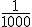

Conocimiento previo
¿Has utilizado algún tipo de medida?
¿Puedes medir la longitud de un cristal de sal utilizando una regla en pulgadas?
¿Cómo lo harías?
¿Has utilizado algún tipo de medida?
¿Puedes medir la longitud de un cristal de sal utilizando una regla en pulgadas?
¿Cómo lo harías?
La conversión de unidades es la transformación del valor numérico de una magnitud física, expresado en una cierta unidad de medida, en otro valor numérico equivalente y expresado en otra unidad de medida de la misma naturaleza.
Múltiplos y submúltiplos
No siempre es posible utilizar las unidades para determinar el valor de un parámetro. Por ejemplo, es difícil medir el tamaño de una hormiga
utilizando el metro. Es por eso que los prefijos de las unidades se utilizan para facilitar la escritura cuando se encuentran expresadas en valores
muy grandes o muy pequeños. Los múltiplos de las unidades se asignan con letras griegas.
Notación científica
Consiste en escribir una cifra entera, entre 1 y 9, seguida de una potencia de base 10, la cual lleva un exponente que puede ser positivo o negativo
e indica la cantidad de ceros que recorre hasta hacer una cifra entera. Cuando el exponente es positivo, el resultado es 1, acompañado de tantos
ceros como indique la potencia.
103 =1000 (ecuación 1) Así, 103 equivale a 1,000.
Si por el contrario el exponente es negativo, equivale a dividir el número 1 entre 10 elevado a la potencia de ese mismo número. Se representa de
la siguiente manera:
10-3=  = 0.001 (ecuación 2) Entonces, 10-3 equivale a 0.001.
Por ejemplo, la distancia de la Tierra al Sol es de 150,000,000 km. Si expresamos esta cifra en notación científica, el decimal debe correrse
ocho espacios hacia la izquierda. Por lo tanto, en notación científica es 1.5x108 km.
El átomo de hidrógeno (H) tiene un diámetro de alrededor de 0.00000005 mm (milímetros). Al expresar esta cantidad en notación científica, el
decimal debe correrse ocho espacios hacia la derecha. Así, su notación científica es 5x10-8 mm.
Conversión de unidades
La conversión de unidades hace referencia al cambio de medida de un sistema a otro para una cantidad específica, siempre y cuando pertenezcan a la misma magnitud. Es decir, que la conversión sea de unidad masa a unidad de masa, o de unidad de tiempo a unidad de tiempo.
Realizar una conversión se hace necesario cuando las unidades no se encuentran en el sistema deseado, como SI o cuando se solicita expresamente que los resultados deben ir en unidades específicas y estas son diferentes a los datos proporcionados.
Para realizar una conversión existen dos métodos:
Regla de tres: Para ello se han establecido equivalencias que sirven como guía. Por ejemplo, en 1 minuto hay 60 segundos y en función de esa premisa determinar el valor deseado. Otros ejemplos de equivalencias corresponden a la tabla
Tomando en cuenta las referencias de algunas equivalencias, podemos calcular la masa de 30 kg en lb:
Recuerda que la Notación científica: es la Abreviación al representar números muy grandes o pequeños de una manera más concisa y manejable. En la matemática que se utiliza para notación científica, un número se expresa como el producto de dos factores: una parte decimal entre 1 y 10 (llamada coeficiente) y una potencia de 10 que indica la escala del número.
● Elabora un cuadro como una de las tablas de la unidad, con equivalencias de volumen para litros, pinta y galón, tomando como referencia m3
● Convierte las siguientes unidades:
A) 4 yd a m. B) 2000 m2 a ha.
● Convierte 54,000 minutos en horas.
● ¿A cuántos días son equivalentes 8 años?
● Cuantas tareas son equivalentes a 12,500 m2?
Obra publicada con Licencia Creative Commons Reconocimiento Compartir igual 4.0